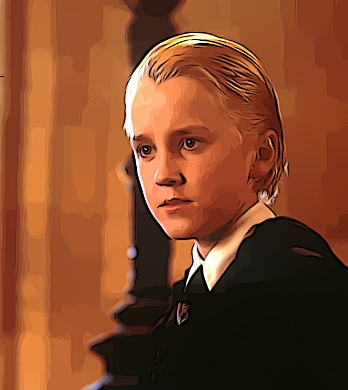

Steckbrief
Name: Draco Lucius Malfoy
Geburtsdatum: 5. Juni 1980
Eltern: Lucius und Narcissa Malfoy
Herkunft: Wiltshire, England
Zauberstab: Ulmenholz mit einem Kern aus einem Drachenherzfaser
Zugehörigkeit: Slytherin
Informationen zum Schauspieler
Draco Malfoy wird im Film von Tom Felton verkörpert.
Tom Felton (geboren am 22. September 1987) wurde für die Rolle ausgewählt und erlangte durch seine Darstellung von Draco Malfoy internationale Bekanntheit.
Nach der Harry Potter-Filmreihe setzte er seine Schauspielkarriere fort und spielte in verschiedenen anderen Filmen und Fernsehserien mit.
Informationen zum Charakter
Draco Malfoy ist eine wichtige Figur in der "Harry Potter"-Filmreihe.
Er stammt aus einer einflussreichen reinblütigen Zaubererfamilie und ist bekannt für seine arrogant-abfällige Haltung gegenüber Muggelstämmigen und seine Loyalität gegenüber Lord Voldemort.
Draco ist ein Mitglied des Hauses Slytherin und bekleidet eine Rolle als Antagonist während der Handlung.
Im Laufe der Geschichte entwickeln sich jedoch seine Motive und Gefühle, und er zeigt auch Anzeichen von Zweifeln und Reue.